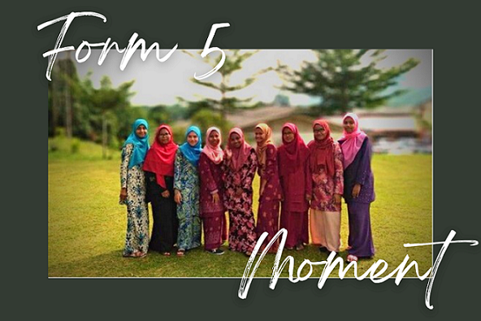
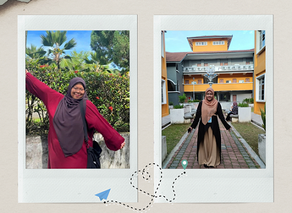
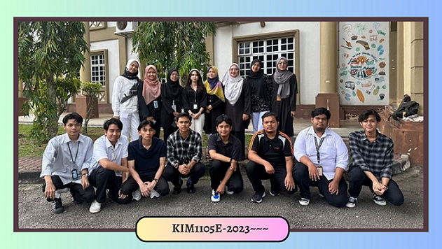

Friendship things
School Friends
I have several friends that we have known since primary school. In addition, we also continue our studies at the same high school. I hope that our relationship will last even though we rarely see each other because each of us has a career and some are continuing their studies.Hopefully our relationship will remain good even if we don't see each other.There is also a good friend of mine who passed away when we were in the fifth grade, hopefully things will be easier for the deceased there. I miss her so much. I also put a picture of the deceased here as a memory.

Best Friends
Nur Adilah, a lifelong friend since primary school, remains a constant source of support and someone with whom I share all aspects of my life. Our deep connection is rooted in years of shared experiences. In contrast, Nur Aina, a more recent friend from university, brings a dynamic focus on academic collaboration, particularly in working on assignments together. The combination of Nur Adilah's enduring emotional support and Nur Aina's more recent but impactful role in academic endeavors creates a well-rounded and fulfilling support system in my life.

University Friends
University friends are really important to me. We go through classes and assignments together, supporting each other in tough times and celebrating our successes. What makes these friendships special is that we come from different backgrounds, and being with them has helped me see things from new perspectives. Whether we're working on projects, studying late, or just having fun during breaks, these friendships have made my time in university memorable and have given me a group of people who've been a big part of my college experience.


Hi There!
I'am Sarriyan Shafie
"Welcome to my digital hub! As a student, I invite you to explore my life's journey insights
into myself, family, friends, education, and more. Feel at home in this virtual space, and
stay a while as we navigate the twists of student experiences together."